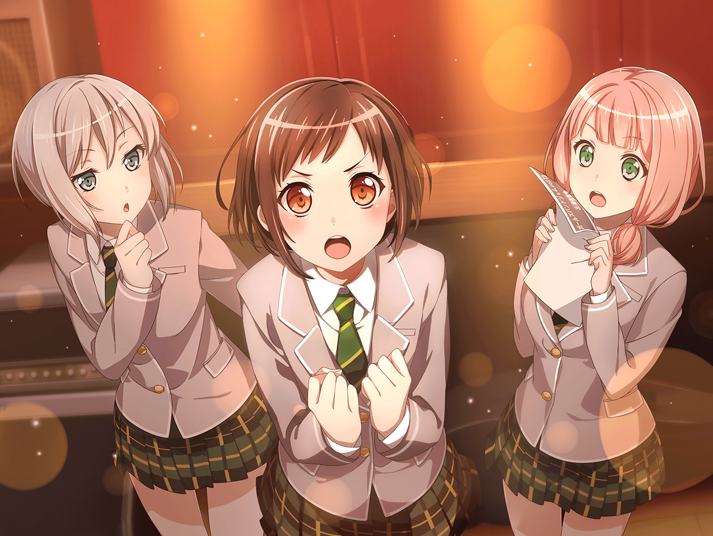

ひまり
はふ～……。
やっぱり、つぐのお家のお茶は美味しいね～
巴
だな。
練習後のこの一杯にいやされるよ
つぐみ
えへへ……
遠慮しないでゆっくりしていってね
ひまり
ありがと～！
ひまり
それにしても残念だな～。
蘭とモカが、
用事で来られなくなっちゃったのは
巴
まあ、しょうがない。
たまにはそういう日もあるさ
ひまり
そうだね。
うーん、なんか眠くなってきちゃった……
練習、頑張りすぎちゃったかな？
ひまり
よ～し！
ちょっと気合を入れて、目を覚ま……
ひまり
あ、気合と言えば……
つぐみ
どうしたの、ひまりちゃん？
ひまり
いや、
あの時のつぐの気合、すごかったな～って思って
つぐみ
えっと、あの時……って？
巴
……あ、わかったぞ。
ガールズバンドジャムの出場を決めた時のことだろ？
ひまり
そうそう！
『チャレンジだと思って、出てみようよっ！』って、
つぐ、すっごく真剣に言ってたよね！
巴
たしかあの時、みんなつぐの気合に気圧されたもんな
つぐみ
あはは……
恥ずかしいよ、もう……
つぐみ
あの時は、本当に無意識だったの。
『出たい！』って思った時には、体が勝手に動いてて……
つぐみ
…………
巴
つぐ？
つぐみ
よく考えたら、
私って……そういうこと多いよね
つぐみ
……気持ちが先行して、
考えなしに口に出ちゃうのは、
私の悪いとこなのかな
巴
そんなことない
巴
あの時、つぐのあの言葉がなかったら、
アタシ達はただのお遊びバンドで終わっていたはずさ
巴
今こうしていられるのは、つぐのおかげでもあるんだ
ひまり
そうだよ！
ひまり
ガールズバンドジャムに出るってことに、
いろんな不安で縮んでいた私達の背中を、
つぐは思いっきり押してくれたんだもん！
ひまり
むしろ、私達はつぐに感謝してるよ！
巴
ああ。
みんなが決められないことを後押ししてくれることが、
つぐのいいところでもあるんだ
つぐみ
そ、そうなのかな？
自分じゃよくわからないけど……
巴
……まあでも、自信がなさすぎるところは、
つぐの悪いところでもある
つぐみ
ご、ごめん……
巴
いや、別に責めているわけじゃないんだ
巴
ただ、つぐはもっと自分に自信を持ってほしい。
アタシ達の仲間であることとか、自分の努力とか……
巴
つぐは頑張り屋さんで、人一倍努力しているんだ。
たまには自分を誇ってもいいじゃないか？
つぐみ
誇る……
ひまり
そうだよ。
つぐは私達の何倍も努力してきたんだもん！
巴
……だからこそ、たまには自分のことを
褒めてやることも大切なことだと思うぞ
つぐみ
……ありがとう
つぐみ
巴ちゃん、ひまりちゃん。
私、うれしいよ……！
巴
ふふ……
やっぱり、つぐは笑った顔が一番だな
ひまり
そうそう！
元気なつぐが一番だね！
つぐみ
そ、そうかな？
えへへ……
つぐみ
いきなり誇ってもいいって言われても、
私、よく分からないけど……
つぐみ
自分に自信を持つことなら、
少しずつだけど、できると思う……！
つぐみ
だから……
私、これからもがんばるからね！
巴
その意気だ！
巴
——ところで、つぐ。
デザートを頼もうと思うんだけど、どれがいいと思う？
つぐみ
えっ？ あっ、ちょっと待ってね！
えーっと、えーっとぉ……
あわわ、いきなり言われても決められないよ～！
ひまり
あはは、あの時の勢いはどこいっちゃったのー？
巴
ふふっ……
これもつぐの『らしさ』ってやつなのかもな
つぐみ
もうっ！
ふたりともからかわないでよぉ～！